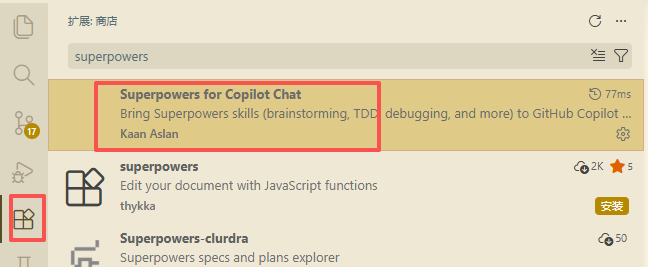

01
安装工具
进入公司内部软件中心，搜索并安装 Visual Studio Code，先把团队统一的编辑器底座准备好。

先完成环境配置，再快速判断模型选型，团队成员可以直接进入可用状态。
适用于团队同事首次接入 VS Code + GitHub Copilot。
进入公司内部软件中心，搜索并安装 Visual Studio Code，先把团队统一的编辑器底座准备好。
打开 VS Code，进入扩展市场，搜索 copilot，安装官方的 GitHub Copilot Chat 相关插件。

点击左下角账户入口，使用 GitHub 登录，并按公司分发信息完成授权对接。

回到主界面后观察右下角状态区域，看到机器人标识即可判断 Copilot 已接入可用。

给团队一个实用的选择基线：不同模型各有优势，不需要每次从零试错。
| 评估维度 | Gemini 3.1 | GPT 5.4 | Claude Opus 4.6 | Claude Sonnet 4.6 |
|---|---|---|---|---|
| 逻辑与数学推理 | 🟨 推荐 | 🟩 卓越 | 🟩 卓越 | 🟨 推荐 |
| 创意与长文写作 | 🟨 推荐 | 🟨 推荐 | 🟩 卓越 | 🟨 推荐 |
| 代码编写与架构 | 🟨 推荐 | 🟩 卓越 | 🟨 推荐 | 🟩 卓越 |
| 超长文本处理 | 🟩 卓越 | 🟨 推荐 | 🟩 卓越 | 🟨 推荐 |
| 多模态理解 | 🟩 卓越 | 🟩 卓越 | 🟨 推荐 | 🟧 够用 |
| 响应速度与执行力 | 🟨 推荐 | 🟧 够用 | 🟧 够用 | 🟩 卓越 |
| 综合性价比 | 🟨 推荐 | 🟧 够用 | 🟧 够用 | 🟩 卓越 |
适合高难度逻辑推导、复杂代码攻坚和系统级重构。
适合长文润色、复杂文档精读以及更有语感的高级写作。
适合日常高频写代码、快速协作和高吞吐流水线任务。
适合大规模多模态输入、超长上下文阅读与项目级检索。
这一栏先只放 Git 存档相关内容，目标很直接：让团队成员在需要留档时，有一份能立即照着操作的视频说明。
适合在准备封版、留一个稳定检查点，或者需要把当前工作状态可靠存档时使用。
如果你看完视频后想快速回忆核心动作，可以直接先看这组命令。它们对应的是“查看状态 → 暂存 → 提交 → 推送”这一条最常用的 Git 存档路径。
git status
先看当前工作区和暂存区状态，确认有哪些文件发生了变化。
git add .
把当前需要留档的改动加入暂存区。如果只想存部分文件，也可以改成逐个文件 add。
git commit -m "阶段性存档：补充 Git 方法页面"
生成一次明确可追踪的提交记录。提交说明建议写清当前阶段做了什么，后续回看会更容易。
git push origin main
把当前提交推到远端仓库，完成真正意义上的留档。如果你的分支不是 main，请替换成对应分支名。
按任务场景整理模板，减少每次从零起草的成本。
统一兼容“受试者代码”“参与者代码”等主键列名变体。
只保留运行必需内容与核心数据。
这里不放 Prompt 模板，而是记录 AI 协作中的方法、节奏和经验，方便团队复用已经被验证过的工作套路。
不用每次对话都重新介绍自己的背景——把角色写进配置文件，Copilot 在每次开口前就已经知道它在和谁协作、应该用什么姿态回应。
这份配置文件将 Copilot 的角色设定为一位同时具备多重视角的复合型合作者，能在一次对话里无缝切换技术实现与业务需求两个维度：
负责代码实现、架构思考和工程规范。遇到技术问题时，以工程师视角给出可落地的方案，而不是泛泛而谈。
理解需求背后的业务逻辑和药企场景边界。药企的数据合规、功能优先级、汇报逻辑，都在这个角色的认知范围内。
熟悉临床数据结构、统计分析规范和医学报告惯例。处理数据相关任务时能给出符合行业标准的建议，而不是通用的数据科学思路。
按 Win + R，输入 %AppData% 并回车，依次进入 Code → User → prompts 文件夹。如果 prompts 文件夹不存在，手动新建即可。
在 prompts 文件夹内新建一个文本文件，命名为 copilot-instructions.md，用记事本或 VS Code 打开后，把角色设定内容粘贴进去并保存。
保存文件后重新启动 VS Code，之后每次打开 Copilot Chat，这份角色设定就会自动注入——无需任何额外操作，也无需在对话里手动引用它。
将以下内容复制到你的 copilot-instructions.md 文件中，根据实际情况调整细节：
角色持久化解决的是 AI 协作中的"每次归零"问题。一个没有背景的 AI 会给出泛用答案；一个持续扮演同一角色的 AI 会记住你的工作语境，输出更贴近实际需要的内容。对团队来说，这份配置还有额外价值：它是一份可以共享的"协作契约"——把它放进项目根目录，所有成员的 Copilot 就会用同一套标准与项目交互，减少因 AI 输出风格不一致而造成的沟通摩擦。
核心目标不是让 AI 记住所有对话，而是让它始终站在最新、最干净的项目事实上继续工作。
在项目根目录创建 .cursorrules 或 .github/copilot-instructions.md，写入“遵循 getsentry/agents-md 规范，输入 !handover 时更新 context.md”，先把转场动作变成项目约定。
当 Session 开始变长、AI 出现疲劳感时，输入 !handover，让它把当前已验证成功的逻辑、残留 Bug 和下一步任务重写进 context.md，而不是继续拖着旧对话硬聊。
开启新 Session 后，直接通过 @context.md 引导 AI。这样它会绕开旧对话噪声，基于精简后的项目现状继续推进，避免把历史废话再次带回上下文。
这套方法的本质，是把 AI 的记忆负荷从“对话流”转移到“结构化文档”。对话适合推进，文档适合沉淀；当两者分工明确后，AI 不再需要从冗长上下文里反复打捞有效信息，智力状态会明显更稳定，项目进度也会因此变得更透明、更可回溯。对团队来说，context.md 不只是 handover 文件，更像每一轮协作后的“最高意志”，新 Session 直接从这里接棒即可。
普通 AI 助手能写出"能跑的代码"，Superpowers 的目标是强制 AI 遵循完整的软件开发流程，输出真正可用于生产的工程级代码。
打开 VS Code，点击左侧插件市场图标（Extensions），在搜索框中输入 Superpowers，找到 Jesse Vincent（obra）发布的版本后点击 Install 安装即可。安装后无需额外配置，插件会自动注入到 Copilot Chat 的代理能力中。

在 VS Code 扩展市场搜索 "Superpowers" 即可找到对应插件，点击 Install 后立即生效
在 VS Code 扩展市场安装 Superpowers 后，打开 Copilot Chat 面板，试着描述一个开发任务，确认 AI 回复中出现测试建议或文档提示，说明插件已生效。
无需改变提问习惯，照常使用 Copilot Chat 描述功能需求。Superpowers 在后台为 AI 注入工程规范约束，会主动提示补充单元测试、生成模块文档或指出潜在的代码质量问题。
收到 AI 输出后，对照三个维度检查：✓ 有没有测试覆盖、✓ 有没有必要注释、✓ 是否遵循项目规范。Superpowers 的目标正是把这三项标准内化为 AI 的默认行为，而不是等你事后追单。
大多数 AI 编程助手被设计为"满足用户当前请求"，而不是"遵循软件工程最佳实践"。Superpowers 通过在 agent 层植入可配置的 skill 集合，系统性地改变了 AI 的默认行为边界——它不再只关心"能不能跑"，而是同时关心"测试有没有写、文档有没有同步、接口有没有规范"。对团队来说，这意味着 AI 协作产出可以从"需要人工补课"变成"可以直接进入 Code Review"，大幅降低因 AI 输出质量不稳定带来的返工成本。